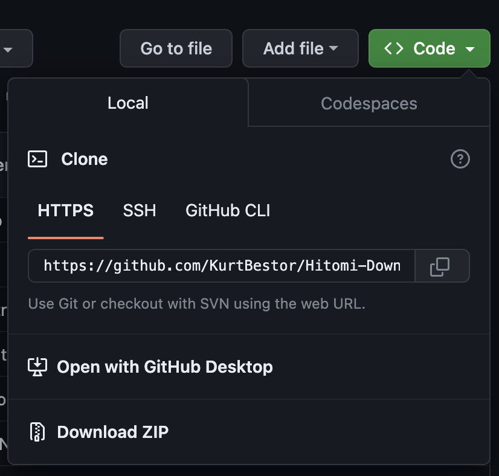

下載mp3&mp4的黑魔法
hitomi下載器是一個神奇的開源軟體， 他可以透過超連結下載大部分的影片或是音檔並且存到本機。  這是 Hitomi Downloader GitHub 的倉庫， 今天要用的東西就是這個開源軟體，您可以在GitHub倉庫裡面直接按下綠色的“code”之後再點擊“下載成壓縮檔”。 此外，您可以再次確認這個軟體可以擷取 哪些平台 上的影片下載成mp3或是mp4。接著，您就可以將你要下載影片的連結複製到這個程式裡面， 選定你要下載成mp3或是mp4的檔案後就可以下載的到檔案了。